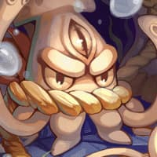

Welcome to this fansite for the game Arkaik: Tales of Sarina!
Here you will find guides for all kinds of stuff related to the game.
Knight Job Change
Boss Timers
0
:
0
0
Osiris
Baphomet
Doppelganger
Mistress
Golden Thief Bug

Drake
Eddga
Maya
Moonlight Flower
Pharaoh

Phreeoni
Orc Lord
Turtle General
Lord of Death
Dracula

Amon Ra
Tao Gunka
RSX 0806
Lady Tanee
Giant Octopus
Kraken
General Guides
Inn Buffs
Sleeping at an inn will fully heal the player and give them 10min buffs that can make a huge difference.
All inn's in the towns have a tiny bed icon on the minimap.
Depending on what town you sleep in, you will get a different stat buff.
Base Town Buffs
Increases Dex and Agi
Resists flinching from enemy attacks, canceled after caster is hit certain times. Increases MDef
Increases Def
Increases SP regenation speed
Increases Luk
Town Stats Buff
Zero
Increases Str +30
Morocc
Increases Flee +?
Al De Baran
Increases Vit +30
Yuno
Increases Int +30
Payon
Increases Dex +30
Alberta

Increases Luk +30
Hugel
None
Geffen
None
Special Buffs
Zero Florest (Observatory)
(These buffs lasts for 20 minutes)
Adds chance to avoid enemy's attack
Recover HP by consuming SP when receiving physical attacks excluding skill attacks

DEX doen't affect player's casting time.
Instantly revive a dead character that will be in Kyrie Eleison status for 2 seconds
Reduces the damage from enemy according to remaining SP
Crests
When you are about to choose your first class, you must choose a crest for your character.
These crests are bonuses that can help your character in certain ways.
Courage
Immunity to fear.
+3 All Stats.
Friendship
Allows you to see the life bar of added friends.
When evolving level, all friends on your map recover life and mana.
+5 of LUK.
Love
Immune to charm.
Healing received from any source have 25% more effective.
+5% of health.
Knowledge
Immune to confusion.
Recovery 25 of mana when killing monsters.
+5 of INT.
Light 
Immunity to blind and curse.
+20% damage against undead.
+5 of VIT.
Hope
When evolving level or killing an epic monster, resurrect all players on the map.
Upon receiving a hit that would kill you, there is a 10% chance to stay with 1 lifeliness.
When defeated, the durability of your equipment does not lower.
Sincerity
+7% damage to neutral property.
+1 All Stats.
Reliability
+3% of final damage.
Your attacks cause +[Base Level] of true damage.
Zero Sewer (Prontera Culvert)
In Zero town there is a tiny lightbulb icon on the minimap.
Inside the house is a NPC with the name [Recrutador] that will let you enter the sewer.
Once you have joined the Sewage Cleaning Program, you can talk to him again to teleport to the sewer NPC.
In Zero town left of the town square, you will find the sewer entrance NPC named [Encarregado dos Esgotos].
Blacksmith Mining/Refinement/Crafting Guide
Mining
The Blacksmith job have two different skill points. One is the normal and the other is for mining.
All mining skills have a tiny icon  at the bottom right corner.
at the bottom right corner.
To be able to start mining, you will need to spend a normal skill point in [Mining]
You will start with 2 [Drill] and you need to craft more as they break after a certain uses.

Best way to start off is to level up [Gurren Drill] to make sure that the crafting success rate is 100% (unless you like to gamble..)
To craft a [Drill], you will need 2 [Steel]. Easiest to farm and level mining is in Abandoned Mine of Mjolnir and Zero (F3).
Kill [Skeleton Worker] and they will drop [Steel] every time.

You can access Zero Florest from the north portal in Zero city.
After you have leveled up [Gurren Drill] to 10, I'd recommend leveling [Bey-Drill].
[Bey-Drill] let you mine faster which will make you level up in mining faster.

[Go Drill] is a nice next choise and if you find two ores next to each other, you can run back and forth to re-trigger the skill.
Do NOT level [Minegan] as it's almost useless (and doesn't even work..)

[Pocket Drill] is not needed as you can have atleast 20+ [Drill] on you and crafting new is easy.

[Tengen Drill] is not the best as it's too easy to make [Drill].
[Reinforced Drill] is okey but is not really needed due to how easy [Drill] is to craft.
[Mine Hue] helps you get that extra loot, can be nice to get.

I don't know anything about damage from "accidents" yet. Not sure if [Mine Shield] is good or needed.
Item Refinement

To start off, you will need 1 normal skill point in [Refining Scroll].
[Phracon] is needed for [Weapon Refinement Scroll Lv.1]
Easiest way to farm [Phracon] is from [Ant Egg] in Infernal Anthill (T1).
[Emveretarcon] is needed for [Weapon Refinement Scroll Lv.2]
Easiest way to farm [Emveretarcon] is from [Mineral] in Mine Dungeon (F2). [Mineral] also drops [Oridecon] and [Gold]
[Oridecon] is needed for [Weapon Refinement Scroll Lv.3]
Easiest way to farm [Oridecon] is from [Mineral] in Mine Dungeon (F2). [Mineral] also drops [Emveretarcon] and [Gold]
[Gold] is needed for [Weapon Refinement Scroll Lv.4]
Easiest way to farm [Gold] is from [Mineral] in Mine Dungeon (F2). [Mineral] also drops [Emveretarcon] and [Oridecon]
[Elunium] is needed for [Equipment Refining Scroll]
Easiest way to farm [Elunium] is from [Obsidian] and [Teddy Bear] in Mine Dungeon (F2). [Obsidian] also drops [Steel]
Mine Dungeon (F2) is one of the better place to farm refining materials as the monster drops everything but [Phracon]

Fastest way to Mine Dungeon is to use the train in Zero to Einbech.
[Mini Furnace] needed for [Enchantedstone Craft] drops from [Old Stove].
Weapon Crafting
Axes
Axe [4]
30 [Iron]
Battle Axe [4]
140 [Iron]
Hammer [3]
45 [Steel]
Buster [2]
8 [Oridecon]
35 [Steel]
50 [Orc's Fang]
Two-Handed Axe [2]
16 [Oridecon]
20 [Steel]
1 [Amethyst]
Daggers
Main Gauche [4]
80 [Iron]
Hugel Knife [2]
40 [Steel]
Dagger [3]
60 [Steel]
Stiletto [3]
90 [Steel]
Gladius [3]
10 [Oridecon]
80 [Steel]
2 [Sapphire]
Damascus [2]
12 [Oridecon]
120 [Steel]
2 [Zircon]
Knuckles
Waghnak [4]
230 [Iron]
2 [Pearl]
Knuckle Dusters [3]
90 [Steel]
Studded Knuckles [3]
140 [Steel]
Fist [1]
8 [Oridecon]
17 [Ruby]
Finger [2]
10 [Oridecon]
22 [Opal]
Claw [2]
16 [Oridecon]
30 [Topaz]
Mace
Club [4]
5 [Iron]
Mace [4]
50 [Iron]
Smasher [3]
35 [Steel]
Flail [3]
60 [Steel]
Chain [3]
85 [Steel]
Morning Star [2]
130 [Steel]
2 [1carat Diamond]
Sword Mace [1]
160 [Steel]
35 [Sharp Scale]
Stunner [2]
200 [Steel]
2 [Heroic Emblem]
Spear
Ranseur [4]
50 [Iron]
Pike [4]
100 [Iron]
Guisarme [3]
50 [Steel]
Glaive [3]
85 [Steel]
Partizan [2]
105 [Steel]
Trident [3]
12 [Oridecon]
20 [Steel]
10 [Aquamarine]
Halberd [2]
22 [Oridecon]
30 [Steel]
Lance
22 [Oridecon]
6 [Ruby]
4 [Evil Horn]
Sword (1 Hand)
Blade [4]
80 [Iron]
50 [Tooth of Bat]
Rapier [3]
40 [Steel]
Schimitar [3]
70 [Steel]
Ring Pommel Saber [3]
80 [Steel]
100 [Wolf Claw]
Saber [3]
14 [Oridecon]
10 [Steel]
2 [Opal]
Haedonggum [2]
16 [Oridecon]
20 [Steel]
2 [Topaz]
Tsurugi [2]
17 [Oridecon]
30 [Steel]
2 [Garnet]
Flamberge [2]
32 [Oridecon]
2 [Cursed Ruby]
Sword (2 Hand)
Katana [4]
50 [Iron]
27 [Horrendous Mouth]
Slayer [3]
50 [Steel]
35 [Decayed Nail]
Two-Handed Sword [2]
22 [Oridecon]
20 [Steel]
Broad Sword [2]
25 [Oridecon]
40 [Steel]
Claymore [2]
40 [Oridecon]
40 [Steel]
2 [1carat Diamond]